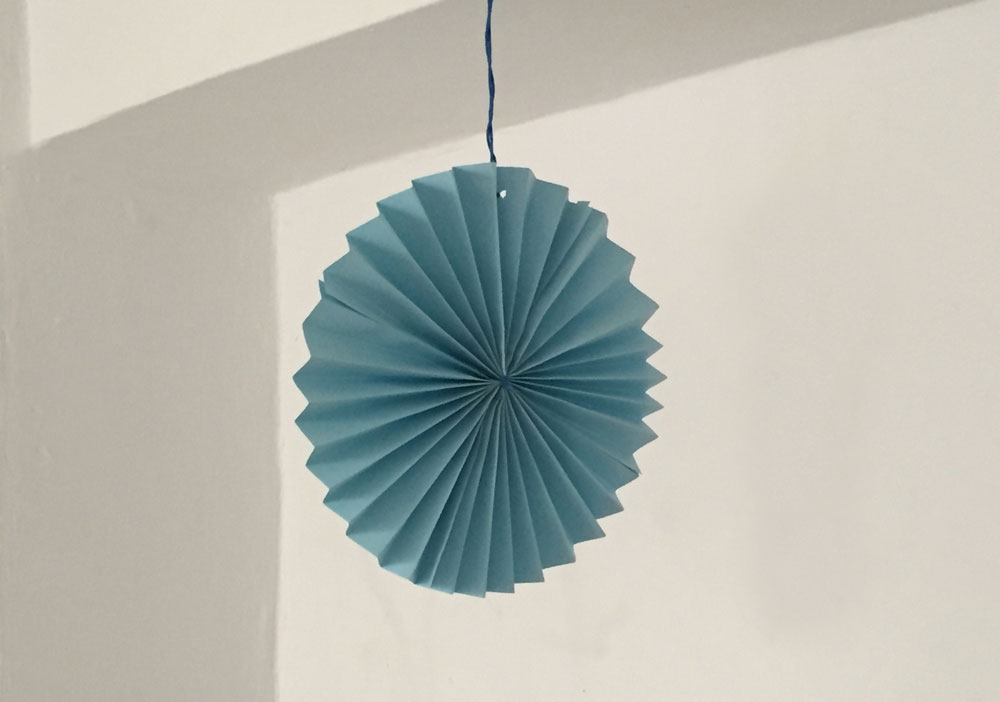

Paper Rosette
Incredible easy paper decoration.
Painted, with colored paper, big or little a fun easy and cheap craft



Noah has cut the bottom part of a bottle, then glued a strip of paper on the top to cover the edge. He decorated with leaves…
Read more →
A simple dream catcher. With beautiful branches, threads and feathers the bad dreams are over.
Read more →


Wall decoration Panda with relief. 1. Finishing 2. Paint the shapes on a cardboard 3. Paint the shapes with black color 4. Cut shapes with cutter…
Read more →